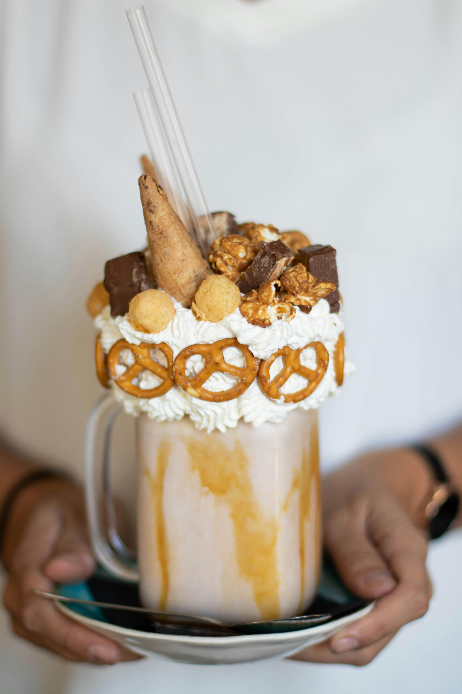

The Golden Chalice
Behold! The most magnificent, extraordinary, bewildering dessert the world has yet to taste! A rich, chocolate milkshake adorned with golden, glimmering treats! Learn how to concoct this chalice for champions in your own home!
INGREDIENTS
- 4 scoops of chocolate ice cream (Or your favorite ice cream!)
- ½ cup of milk
- Caramel syrup
- Whipped cream
- Caramelized popcorn
- Mini waffle cones
- Chocolate bar
- Pretzels
- Straws
INSTRUCTIONS
- Place 4 scoops of ice cream into a blender
- Add ½ cup of milk to the blender
- Add a drizzle of caramel inhto the blender
- Cover your blender and blend until your mixture is smooth
- Drizzle caramel along the insides of a glass mug (Or your favorite container!)
- Pour the mixture into the mug
- Dispense whipped cream around the rim and on the top of your milkshake
- Garnish your milkshake by adding caramelized popcorn, mini waffle cones, and chocolate pieces
- Further garnish your milkshake by placing pretzels around the rim of the milkshake
- Add a straw and enjoy! (Best served cold)